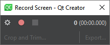
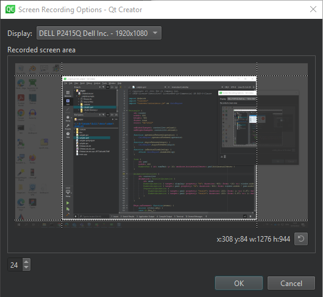
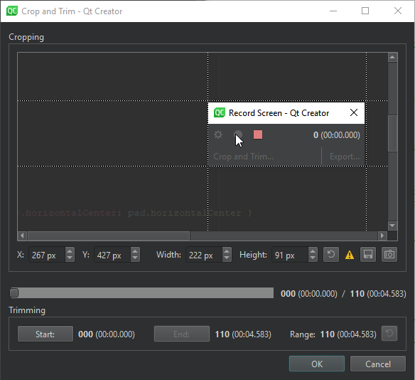

Record screens
With FFmpeg, you can record your screens and save the recordings as animated images or videos.
To record screens:
- Select Tools > Screen Recording.

- Select
 to select the screen to record from and to set the recorded screen area.
to select the screen to record from and to set the recorded screen area. - Select
 to start recording.
to start recording. - Select
 when you are done recording.
when you are done recording. - Select Crop and Trim to edit the recording.
- Select Export to save the recording as an animated image or a video.
Note: Enable the Screen Recorder plugin to use it.
Set the screen and area to record
Set the screen and the area to record in the Screen Recording Options dialog.

To select a screen and area:
- In Display, select the display to record.
- In Recorded screen area, drag the guides to set the x and y coordinates of the starting point for the recording area, as well as the width and height of the area.
- Select OK to return to the Record Screen dialog.
Select to reset the area.
Edit recordings
You can crop and trim the recording in the Crop and Trim dialog.

To crop a recording, in Cropping, drag the guides to set the x and y coordinates of the starting point of the recorded area, as well as the width and height of the area.
To save a cropped version of the current frame as a file, select  .
.
To copy a cropped version of the current frame to the clipboard, select .
To trim a recording:
- Click the slider to show a handle and drag it to the frame where you want the recording to start.
- Click Start to set the first frame.
- Click the slider again and drag the handle to the frame where you want the recording to end.
- Click End to set the last frame.
Select to reset the crop area and trim range.
See also Screen Recording and Enable and disable plugins.